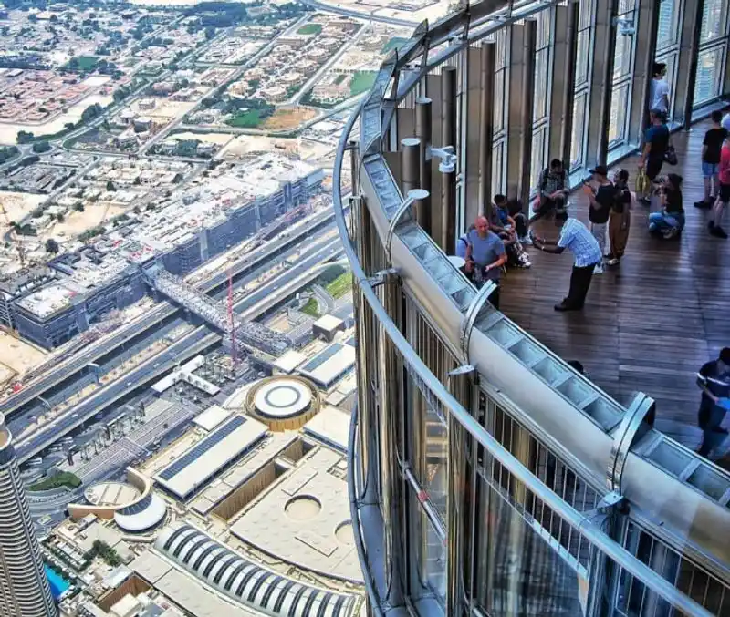
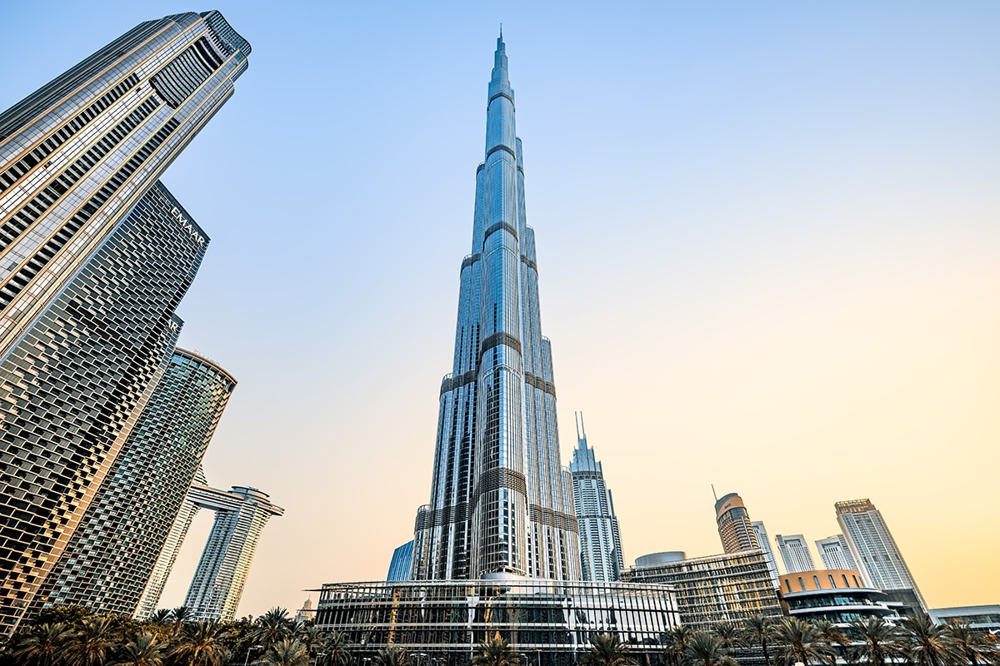

The Burj Khalifa, standing at an impressive 828 meters (2,717 feet), is the tallest structure in the world and a symbol of
Dubai's ambition and innovation. Completed in 2012, the tower has redefined the Dubai skyline and attracts millions of
visitors each year. Designed by the architecture firm Skidmore, Owings & Merrill, its sleek, tapered form draws inspiration
from Islamic architecture, making it both a modern marvel and a respectful nod to traditional design. This engineering feat
required advanced construction techniques and over 12,000 workers, showcasing Dubai’s commitment to breaking boundaries.

The Burj Khalifa houses a wide range of spaces, including luxury residences, corporate suites, and the Armani Hotel, making
it a self-contained vertical city. Its interiors are meticulously designed, featuring premium materials such as polished
stone, stainless steel, and Venetian stucco. Visitors can enjoy fine dining in the “At.mosphere” restaurant on the 122nd
floor or relax in beautifully designed lounges and observation decks. The “At the Top” observation deck on the 148th floor
offers panoramic views of Dubai and the surrounding desert, providing a unique perspective of the city's rapid expansion.

The tower has become an iconic landmark and a top tourist attraction, not just for its height but for its role in redefining
urban architecture. With its choreographed LED lighting shows, the Burj Khalifa often lights up in celebration of global
events and holidays, drawing crowds and social media attention worldwide. The Burj Khalifa’s influence extends beyond
architecture, symbolizing Dubai’s transformation into a global center of luxury, business, and innovation, making it a
must see for anyone visiting the UAE.
